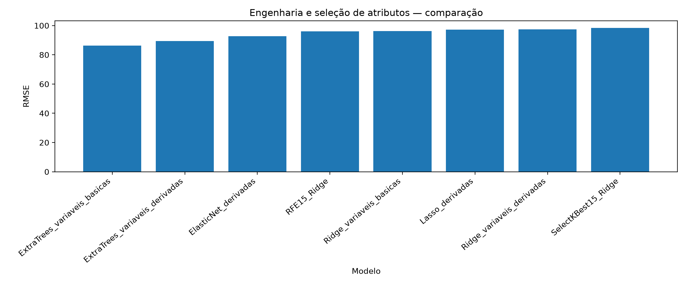

Engenharia e seleção de atributos
Testar interações entre idade, água, cimento, DRY D1 e fibras e avaliar métodos de seleção.
Resultado principal
Extra Trees com variáveis básicas permaneceu superior às configurações com atributos derivados, com RMSE 86,232 µm/m e acurácia do sinal 0,884.
Decisão metodológica
Não ampliar a dimensionalidade automaticamente; manter variáveis derivadas apenas quando houver ganho demonstrável.
Evidência tabular
| MAE | RMSE | R2 | acuracia_sinal | modelo | MAE_cv_medio | MAE_cv_desvio | RMSE_cv_medio | RMSE_cv_desvio | R2_cv_medio | R2_cv_desvio | cenario_atributos |
|---|---|---|---|---|---|---|---|---|---|---|---|
| 48.440019879912754 | 86.23195418780527 | 0.7911076696661319 | 0.8838977194194886 | ExtraTrees_variaveis_basicas | 48.44605392274129 | 5.328860877540963 | 85.13593893940511 | 13.82008225163986 | 0.7923190805852203 | 0.05460698813440366 | variaveis_basicas |
| 49.29734132468929 | 89.36178460564743 | 0.775668786828511 | 0.8562543192812716 | ExtraTrees_variaveis_derivadas | 49.302617995387145 | 4.780681160218494 | 88.25522722999278 | 14.136724413252711 | 0.7768569343850134 | 0.058116699681582756 | variaveis_derivadas |
| 63.11232126043424 | 92.69443367817465 | 0.758624409481207 | 0.7975120939875605 | ElasticNet_derivadas | 63.119882876144096 | 6.4375002924785365 | 91.91441805692051 | 12.153172049570804 | 0.7601165571977334 | 0.047476100004516186 | variaveis_derivadas |
| 62.54508284883887 | 96.08032750595626 | 0.7406686696689615 | 0.796821008984105 | RFE15_Ridge | 62.55426990864373 | 7.134757158273368 | 94.82464438468189 | 15.639995139285745 | 0.7432391791014963 | 0.06590210713362883 | variaveis_derivadas |
| 63.16059650256423 | 96.15933292656446 | 0.7402420057495308 | 0.7940566689702834 | Ridge_variaveis_basicas | 63.167093035239986 | 5.997610566667288 | 95.08962212804221 | 14.453926654414484 | 0.7422034576018918 | 0.06088588596275289 | variaveis_basicas |
| 64.4913440819347 | 97.21615005229657 | 0.7345010091158806 | 0.7906012439530062 | Lasso_derivadas | 64.498914380972 | 5.432554379705127 | 96.22653689289727 | 14.00344558359594 | 0.7367828879702341 | 0.057760191321489046 | variaveis_derivadas |
| 65.11626772783418 | 97.46573422484204 | 0.7331360217853689 | 0.7843814789219073 | Ridge_variaveis_derivadas | 65.1225256973574 | 5.526025819781737 | 96.51288696598311 | 13.75612645697513 | 0.7351095835174016 | 0.05734637501336316 | variaveis_derivadas |
| 67.09140149819319 | 98.39968340323372 | 0.727997158714993 | 0.78852798894264 | SelectKBest15_Ridge | 67.09532657938797 | 6.711958444032609 | 97.85617487036397 | 10.438338263523717 | 0.7276223014052773 | 0.04916028658489503 | variaveis_derivadas |

Rastreabilidade
Este experimento sustenta diretamente a seção 4.7 dos resultados parciais da dissertação.
Relatório detalhado do experimento
Conteúdo incorporado diretamente do relatório Markdown original do Experimento 07, preservando procedimentos, tabelas, resultados, interpretação e conclusão.
1. Caracterização e finalidade
Este experimento avalia se a criação de variáveis derivadas e a aplicação de métodos de seleção de atributos melhoram a predição da variação dimensional longitudinal. A finalidade é testar se interações entre idade, água, cimento, DRY D1 e fibras aumentam o desempenho em relação às variáveis básicas.
2. Variável de resposta
A variável de resposta permanece epsilon_t, com preservação do sinal. Portanto, o experimento continua alinhado à predição da variação dimensional, e não à predição de magnitude absoluta.
3. Variáveis utilizadas
As variáveis básicas incluem relação a/c, consumos de cimento, água, DRY D1 e fibras, além de idade e variáveis categóricas. As variáveis derivadas criadas foram:
| Variável derivada | Interpretação |
|---|---|
water_cement_ratio_check |
razão água/cimento recalculada pelos consumos |
dry_d1_per_cement |
proporção de DRY D1 por cimento |
water_dry_interaction |
interação entre água e DRY D1 |
wb_dry_interaction |
interação entre relação a/c e DRY D1 |
fiber_total |
soma das fibras metálica, macrofibra PP e microfibra PP |
fiber_total_per_cement |
proporção de fibras totais por cimento |
water_fiber_interaction |
interação entre água e fibras totais |
dry_fiber_interaction |
interação entre DRY D1 e fibras totais |
wb_fiber_interaction |
interação entre relação a/c e fibras totais |
water_per_fiber_plus_one |
razão entre água e fibras totais, com ajuste contra divisão por zero |
cement_water_product |
produto entre cimento e água |
cement_dry_interaction |
interação entre cimento e DRY D1 |
idade_dry_interaction |
interação entre idade e DRY D1 |
idade_wb_interaction |
interação entre idade e relação a/c |
idade_fiber_interaction |
interação entre idade e fibras totais |
idade_water_interaction |
interação entre idade e consumo de água |
4. Modelos avaliados
Foram avaliados modelos com variáveis básicas, modelos com variáveis derivadas e modelos com seleção de atributos. A validação foi feita por grupo de amostra.
5. Tabela de resultados gerada
Tabela 1 — Comparação entre engenharia e seleção de atributos
A Tabela 1 compara todos os cenários de atributos e seleção. O RMSE é usado como critério principal de ranqueamento; MAE, R² e acurácia do sinal complementam a interpretação.
Arquivo de origem: experimento_07_engenharia_selecao/resultados/comparacao_engenharia_selecao.csv
| MAE | RMSE | R2 | acuracia_sinal | modelo | MAE_cv_medio | MAE_cv_desvio | RMSE_cv_medio | RMSE_cv_desvio | R2_cv_medio | R2_cv_desvio | cenario_atributos |
|---|---|---|---|---|---|---|---|---|---|---|---|
| 48.44 | 86.232 | 0.791 | 0.884 | ExtraTrees_variaveis_basicas | 48.446 | 5.329 | 85.136 | 13.82 | 0.792 | 0.055 | variaveis_basicas |
| 49.297 | 89.362 | 0.776 | 0.856 | ExtraTrees_variaveis_derivadas | 49.303 | 4.781 | 88.255 | 14.137 | 0.777 | 0.058 | variaveis_derivadas |
| 63.112 | 92.694 | 0.759 | 0.798 | ElasticNet_derivadas | 63.12 | 6.438 | 91.914 | 12.153 | 0.76 | 0.047 | variaveis_derivadas |
| 62.545 | 96.08 | 0.741 | 0.797 | RFE15_Ridge | 62.554 | 7.135 | 94.825 | 15.64 | 0.743 | 0.066 | variaveis_derivadas |
| 63.161 | 96.159 | 0.74 | 0.794 | Ridge_variaveis_basicas | 63.167 | 5.998 | 95.09 | 14.454 | 0.742 | 0.061 | variaveis_basicas |
| 64.491 | 97.216 | 0.735 | 0.791 | Lasso_derivadas | 64.499 | 5.433 | 96.227 | 14.003 | 0.737 | 0.058 | variaveis_derivadas |
| 65.116 | 97.466 | 0.733 | 0.784 | Ridge_variaveis_derivadas | 65.123 | 5.526 | 96.513 | 13.756 | 0.735 | 0.057 | variaveis_derivadas |
| 67.091 | 98.4 | 0.728 | 0.789 | SelectKBest15_Ridge | 67.095 | 6.712 | 97.856 | 10.438 | 0.728 | 0.049 | variaveis_derivadas |
6. Variáveis selecionadas pela engenharia e seleção de atributos
Tabela 2 — Variáveis selecionadas pelo SelectKBest15
O SelectKBest seleciona as variáveis com maior associação estatística individual com epsilon_t, usando f_regression.
| ordem | variavel_selecionada | score_f |
|---|---|---|
| 1 | idade_water_interaction | 1525.85 |
| 2 | idade_wb_interaction | 1489.45 |
| 3 | idade_dias | 1476.72 |
| 4 | idade_horas | 1476.72 |
| 5 | idade_label_56 dias | 721.666 |
| 6 | dry_d1_per_cement | 381.005 |
| 7 | dry_d1 | 380.563 |
| 8 | wb_dry_interaction | 378.225 |
| 9 | water_dry_interaction | 376.774 |
| 10 | cement_dry_interaction | 374.151 |
| 11 | idade_label_28 dias | 129.674 |
| 12 | idade_fiber_interaction | 126.869 |
| 13 | idade_label_3 dias | 88.933 |
| 14 | dry_fiber_interaction | 83.326 |
| 15 | idade_label_7 dias | 82.119 |
Tabela 3 — Variáveis selecionadas pelo RFE15 + Ridge
O RFE seleciona variáveis de forma recursiva, considerando o comportamento do modelo Ridge. A tabela apresenta as variáveis selecionadas e o impacto absoluto dos coeficientes.
| ordem | variavel_selecionada | coeficiente_ridge | impacto_absoluto |
|---|---|---|---|
| 1 | cement_CP II F 32 | 207.174 | 207.174 |
| 2 | curing_56 dias ar 50% umidade | -190.73 | 190.73 |
| 3 | idade_water_interaction | -164.199 | 164.199 |
| 4 | water_fiber_interaction | 130.561 | 130.561 |
| 5 | fiber_total | -128.123 | 128.123 |
| 6 | idade_label_56 dias | 109.166 | 109.166 |
| 7 | local_ensaio_Campo | -105.999 | 105.999 |
| 8 | estado_ES | -95.681 | 95.681 |
| 9 | wb_dry_interaction | 83.24 | 83.24 |
| 10 | estado_RS | 63.563 | 63.563 |
| 11 | cement_CP II Z 32 | 63.563 | 63.563 |
| 12 | idade_label_7 dias | 54.85 | 54.85 |
| 13 | cement_CP II | -52.184 | 52.184 |
| 14 | local_ensaio_Laboratório | 51.488 | 51.488 |
| 15 | local_ensaio_Não informado | 50.859 | 50.859 |
7. Figura gerada
Figura 1 — Comparação dos cenários de engenharia e seleção
A Figura 1 mostra o RMSE de cada cenário. Como RMSE é erro, a menor barra representa o melhor desempenho.
8. Interpretação dos resultados
O melhor desempenho foi obtido por ExtraTrees_variaveis_basicas, com RMSE de 86.232 µm/m, MAE de 48.440 µm/m, R² de 0.791 e acurácia do sinal de 0.884.
O resultado é tecnicamente relevante porque indica que, nesta base, a engenharia de atributos não superou o modelo Extra Trees com variáveis básicas. Isso não invalida as variáveis derivadas; mostra apenas que o modelo de árvores conseguiu capturar relações não lineares relevantes sem necessidade de aumentar a dimensionalidade.
As variáveis selecionadas pelos métodos estatísticos reforçam a importância da idade e das interações longitudinais, sobretudo idade_water_interaction, idade_wb_interaction, idade_dias, idade_horas e variáveis associadas ao DRY D1.
9. Conclusão do experimento
O Experimento 7 mostra que a engenharia de atributos e a seleção de variáveis foram metodologicamente úteis, mas não produziram o melhor desempenho global. A configuração mais forte permaneceu com Extra Trees e variáveis básicas.